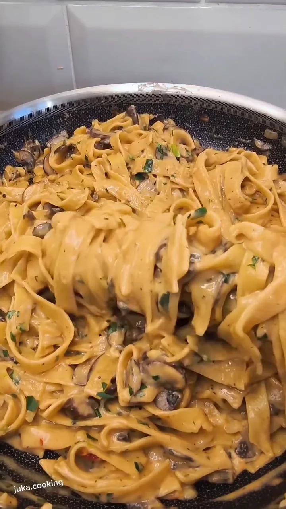

Cremige One-Pot Tagliatelle mit Champignons
Keine Lust auf einen Berg von Abwasch? Dann ist dieses Rezept genau das Richtige für dich! Nur ein Topf, wenige Zutaten und jede Menge Geschmack.
- 2 Personen
- ca. 15 Min.
- 13 Zutaten
- 8 Schritte
Zur Zubereitung Video ansehen ↗
Zutaten
Zubereitung
- Champignons in Scheiben schneiden und goldbraun anbraten.
- Butter, Zwiebeln und Knoblauch dazugeben und kurz mitrösten.
- Die ungekochten Tagliatelle direkt in den Topf geben.
- Sahne, Wasser und alle Gewürze hinzufügen.
- Etwa 10 Minuten köcheln lassen und gelegentlich umrühren.
- Bei Bedarf etwas Wasser ergänzen.
- Sobald die Nudeln gar sind, den Käse unterrühren.
- Mit Petersilie verfeinern und servieren.